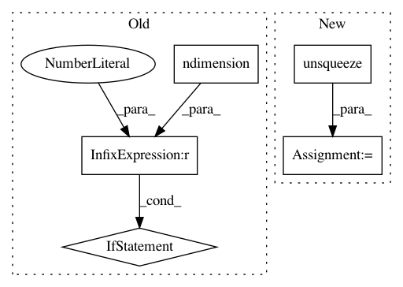

7af8b34770841555bf7fa438fa04ed9f4bf46bf3,gpytorch/lazy/block_lazy_tensor.py,BlockLazyTensor,_quad_form_derivative,#BlockLazyTensor#Any#Any#,76
Before Change
return res
def _quad_form_derivative(self, left_vecs, right_vecs):
if left_vecs.ndimension() == 1:
left_vecs = left_vecs.unsqueeze(1)
right_vecs = right_vecs.unsqueeze(1)
left_vecs = self._add_batch_dim(left_vecs)
right_vecs = self._add_batch_dim(right_vecs)
res = self.base_lazy_tensor._quad_form_derivative(left_vecs, right_vecs)
return res
After Change
right_vecs = right_vecs.unsqueeze(-1)
// deal with left_vecs having batch dimensions
elif left_vecs.size(-1) != right_vecs.size(-1):
left_vecs = left_vecs.unsqueeze(-1)
left_vecs = self._add_batch_dim(left_vecs)
right_vecs = self._add_batch_dim(right_vecs)
res = self.base_lazy_tensor._quad_form_derivative(left_vecs, right_vecs)
return res
In pattern: SUPERPATTERN
Frequency: 3
Non-data size: 5
Instances
Project Name: cornellius-gp/gpytorch
Commit Name: 7af8b34770841555bf7fa438fa04ed9f4bf46bf3
Time: 2020-03-14
Author: balandat@fb.com
File Name: gpytorch/lazy/block_lazy_tensor.py
Class Name: BlockLazyTensor
Method Name: _quad_form_derivative
Project Name: cornellius-gp/gpytorch
Commit Name: 57d16b26229b990333f4dff300451cc962d217e0
Time: 2018-11-14
Author: gardner.jake@gmail.com
File Name: gpytorch/lazy/lazy_tensor.py
Class Name: LazyTensor
Method Name: exact_predictive_mean
Project Name: cornellius-gp/gpytorch
Commit Name: 7570ee1d758c93dd4054009fc12be6cc31b54031
Time: 2018-11-25
Author: gpleiss@gmail.com
File Name: gpytorch/lazy/interpolated_lazy_tensor.py
Class Name: InterpolatedLazyTensor
Method Name: _get_indices